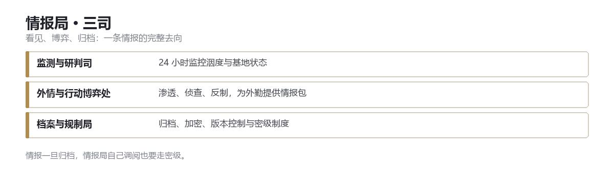

DOC 04 · 情报局（摩涅莫绪涅之眼）
情报局 （摩涅莫绪涅之眼）
全域情报调研与态势管控 · 看见，并且记住

一、定位
情报局不参与总部驻守、不执行一线镇压、不开展异常实验。
它的核心价值只有四条：提前预知危机，全域监控异常，掌控敌对势力，汇总所有情报。
GACC 所有行动、管控、作战、防控预案，皆以情报局的情报为核心依据。它是维系世界常态的「前置防线」，与安全部门、机动特遣队平级独立，无上下级隶属，跨总部各层与全部观察站拥有全域情报调度权。
二、主要工作
- 24 小时实时监测全球异常能量波动、空间裂隙、认知污染扩散、未知异象诞生
- 捕捉民间灵异传闻、未知失踪案件、反常自然现象，筛选潜在的未管控异常
- 监测已管控异常的状态变化、躁动前兆、能力波动，预判失控风险
- 对高危异常、活跃异常建立动态侵蚀等级，实时更新
- 提前发布危机预警，推送风险信息至总部值班室、安全部门应急组、待命机动特遣队
三、对外
- 渗透第三方异常组织，安插潜伏人员，获取核心情报
- 预判敌方突袭、劫持对象、释放异常、破坏总部等行动，提前布置防御
- 整理各势力的立场、战力、弱点、诉求，为高层外交与作战决策提供依据
- 执行反渗透、反卧底、反情报窃取，肃清内部与外部的潜伏势力
四、策划与情报支持
- 为机动特遣队外勤任务提供目标位置、能力弱点、环境风险、撤退路线、敌方布防
- 为总部安保部署提供风险预判，针对性优化安防布局
- 根据情报制定管控预案、应急方案、反制方案
- 行动中实时传输动态情报，同步战场变化，辅助现场指挥决策
- 行动结束后复盘情报偏差与漏洞，更新数据库，优化后续预案
五、信息污染与认知风险管控
- 甄别、解析各类有害信息污染、认知扭曲信号、精神污染传播源
- 追踪污染扩散路径、传播载体、感染范围，划定认知污染禁区
- 汇总认知盲区的异常特性，整理防护方案与规避准则，下发全 GACC
- 预警大规模认知灾难、全域污染传播危机，联动机动特遣队专项小队处置
六、全域监测与战略研判司
定位 整合原态势监测、战略研判及认知风控的顶层职能。
核心职责 24 小时监控全球异常波动、总部状态及现实稳定数据，进行第一级风险筛选与警报。
战略分析 长期终局情景推演、敌对势力战略意图分析、GACC 资源全局调配建议，直接为最高决策层提供决策依据。
无形威胁研判 专职处理信息污染、认知盲区、认知危害等无形威胁的情报分析，评估传播路径、影响范围与根除预案。这是信息层面的第一道防线。
七、外情与行动博弈处
定位 整合所有对外情报攻防职能。
核心职责 对外部异常组织进行渗透、侦查、反制与战略欺骗；安插与管理潜伏外勤。
行动支援 为所有外勤机动特遣队提供战术情报包，包括目标侦查、路径规划、实时动态与战后复盘。是直接支撑枪杆子的情报单元。
常态维护 全权负责世俗社会的舆情管控：清理异常痕迹、制造合理解释、封锁情报泄露，维持常态认知。
八、档案与规制局
定位 掌控所有情报的最终归宿与流出。
核心职责 运维 GACC 全域情报数据库，对一切异常档案、行动报告、实验数据进行最终归档、加密与版本控制。
密级 制定并执行情报密级制度，管控信息的访问、流转与知悉范围，杜绝混乱与越权。
遗产监护 额外负责鉴定、回收并安保那些散落的最高机密情报，防止其落入敌手。
九、解析组
原图特密藏所的溯源解析组。1973 年科研部撤销后，七个人并进了情报局。
职责 只做预测，不做解释。判断对象的等级、弱点、触发条件，以及「它下一步会做什么」。
不做 不写论文，不做实验，不接触。GACC 在 1973 年之后认定：理解本身就是一种接触。
十、白噪音组
原机动特遣队白噪音-5。信息处置本来就是情报局的活，这支队伍现在归外情与行动博弈处调遣。
职责 现场级的誊正：认知滤网部署、目击者批量誊改、传播链切断。
边界 情报局管「记录与媒体」，白噪音组管「现场与记忆」。两边都不碰对方的档案。
十一、观察站网络
四十七处观察站是情报局的触角，也是 GACC 唯一常驻总部之外的东西。
- 每站两人一组，六到八人编制，半年一轮换。
- 只做三件事：看、记、报。不处置、不接触、不追。
- 站内不设防，不挂 GACC 标识，不配重武器。
- 数据每日回传；连续三日无回传，按「失联」处理，不派人去找。
站毁即盲，不重建。这条规矩来自 1988 年：那一年有三座站同时失联，总部派人去看，去了六个人，回来两个。